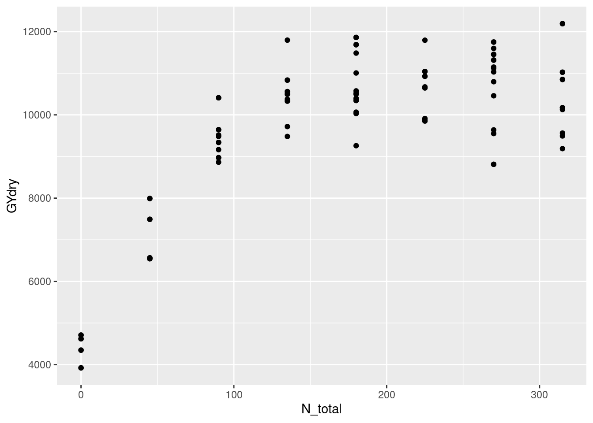
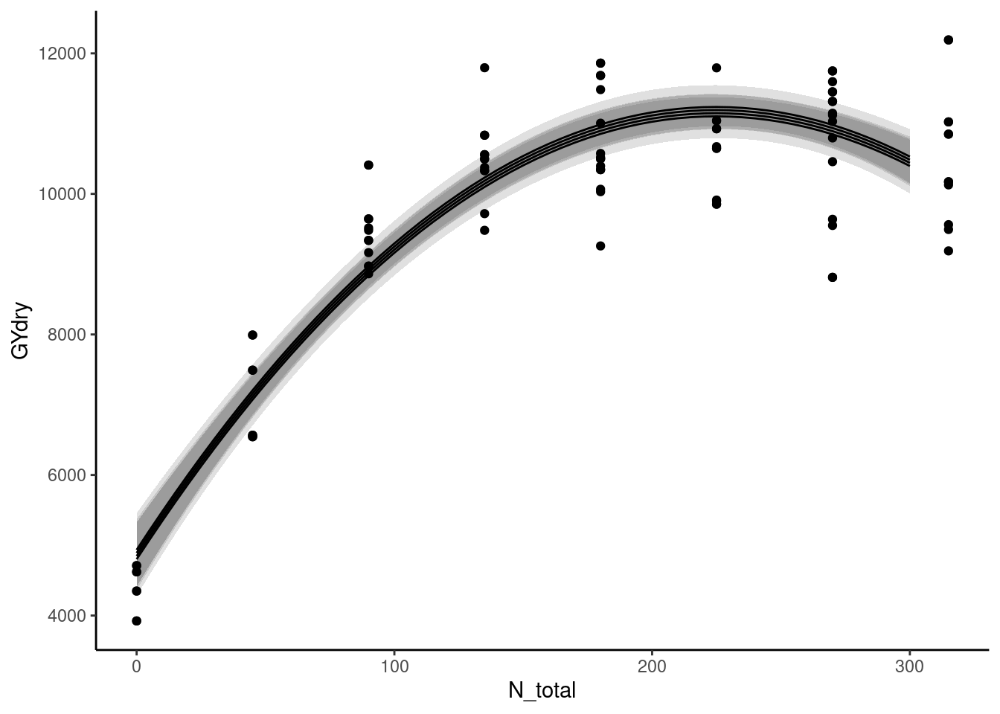

library(tidyverse)Day 20 - 10/04/2024
Announcements
- Mid-semester feedback survey (please and thank you!)
Model selection demo
Load the data:
dd_yield <- readxl::read_xlsx("data/8.Yield_Plant_Measurements.xlsx", sheet = 2) %>%
filter(Year == 2014,
State == "IA",
Site == "Ames") %>%
mutate(across(VT_TissN:R4N, ~ as.numeric(.)))
dd_soil <- readxl::read_xlsx("data/1.Site_Characterization.xlsx", sheet = 2) %>%
filter(Year == 2014,
State == "IA",
Site == "Ames",
Horizon == "Ap") %>%
mutate(Block = as.numeric(Block),
across(Clay:WC, ~as.numeric(.)))
dd_N <- readxl::read_xlsx("data/4.SoilN.xlsx", sheet = 2) %>%
filter(Year == 2014,
State == "IA",
Site == "Ames") %>%
mutate(across(c(Plot_ID, N_Trt, Plant_N, Side_N, Plant_N_SI, Side_N_SI), ~as.numeric(.)))
dd_N# A tibble: 100 × 17
Year State Site Site_Prod Sam_Time Plot_ID Block N_Trt Plant_N Side_N
<dbl> <chr> <chr> <chr> <chr> <dbl> <dbl> <dbl> <dbl> <dbl>
1 2014 IA Ames Low Post 101 1 2 40 0
2 2014 IA Ames Low Post 102 1 3 80 0
3 2014 IA Ames Low Post 103 1 9 40 40
4 2014 IA Ames Low Post 104 1 14 40 240
5 2014 IA Ames Low Post 105 1 16 80 160
6 2014 IA Ames Low Post 106 1 13 40 200
7 2014 IA Ames Low Post 107 1 10 40 80
8 2014 IA Ames Low Post 108 1 5 160 0
9 2014 IA Ames Low Post 109 1 1 0 0
10 2014 IA Ames Low Post 110 1 4 120 0
# ℹ 90 more rows
# ℹ 7 more variables: Plant_N_SI <dbl>, Side_N_SI <dbl>, Nitrate1 <chr>,
# Nitrate2 <chr>, Nitrate3 <chr>, Ammonium1 <chr>, Comment <chr>dd_yield <- readxl::read_xlsx("data/8.Yield_Plant_Measurements.xlsx", sheet = 2) %>%
filter(Year == 2014,
State == "IA",
Site == "MasonCity") %>%
mutate(across(VT_TissN:R4N, ~ as.numeric(.)))
dd_soil <- readxl::read_xlsx("data/1.Site_Characterization.xlsx", sheet = 2) %>%
filter(Year == 2014,
State == "IA",
Site == "MasonCity",
Horizon == "Ap") %>%
mutate(Block = as.numeric(Block),
across(Clay:WC, ~as.numeric(.)))
dd_N <- readxl::read_xlsx("data/4.SoilN.xlsx", sheet = 2) %>%
filter(Year == 2014,
State == "IA",
Site == "MasonCity") %>%
mutate(across(c(Plot_ID, N_Trt, Plant_N, Side_N, Plant_N_SI, Side_N_SI), ~as.numeric(.)))
dd_N# A tibble: 100 × 17
Year State Site Site_Prod Sam_Time Plot_ID Block N_Trt Plant_N Side_N
<dbl> <chr> <chr> <chr> <chr> <dbl> <dbl> <dbl> <dbl> <dbl>
1 2014 IA MasonCity High Post 101 1 2 40 0
2 2014 IA MasonCity High Post 102 1 3 80 0
3 2014 IA MasonCity High Post 103 1 9 40 40
4 2014 IA MasonCity High Post 104 1 14 40 240
5 2014 IA MasonCity High Post 105 1 16 80 160
6 2014 IA MasonCity High Post 106 1 13 40 200
7 2014 IA MasonCity High Post 107 1 10 40 80
8 2014 IA MasonCity High Post 108 1 5 160 0
9 2014 IA MasonCity High Post 109 1 1 0 0
10 2014 IA MasonCity High Post 110 1 4 120 0
# ℹ 90 more rows
# ℹ 7 more variables: Plant_N_SI <dbl>, Side_N_SI <dbl>, Nitrate1 <chr>,
# Nitrate2 <chr>, Nitrate3 <chr>, Ammonium1 <chr>, Comment <chr>dd_complete <- dd_yield %>%
left_join(dd_soil) %>%
left_join(dd_N)Joining with `by = join_by(Year, State, Site, Block)`
Joining with `by = join_by(Year, State, Site, Site_Prod, Plot_ID, Block, N_Trt,
Plant_N, Side_N, Plant_N_SI, Side_N_SI)`dd_complete <- dd_complete %>%
mutate(gyield_14 = GYdry/.94,
N_total = Plant_N_SI + Side_N_SI)dd_complete %>%
ggplot(aes(N_total, GYdry))+
geom_point()
m1 <- lm(GYdry ~ N_total + I(N_total^2), data = dd_complete)
m2 <- lm(GYdry ~ N_total + I(N_total^2) + Block , data = dd_complete)
m3 <- lm(GYdry ~ N_total + I(N_total^2) + Block + TOC, data = dd_complete)
m4 <- lm(GYdry ~ N_total + I(N_total^2) + Block + TOC + Clay, data = dd_complete)
m5 <- lm(GYdry ~ N_total + I(N_total^2) + Block + TOC + Clay + Sand, data = dd_complete)
m6 <- lm(GYdry ~ N_total + I(N_total^2) + Block + TOC + Clay + Sand + Silt, data = dd_complete)summary(m1)
Call:
lm(formula = GYdry ~ N_total + I(N_total^2), data = dd_complete)
Residuals:
Min 1Q Median 3Q Max
-2102.35 -522.38 43.16 585.75 2037.25
Coefficients:
Estimate Std. Error t value Pr(>|t|)
(Intercept) 4.868e+03 2.373e+02 20.51 <2e-16 ***
N_total 5.609e+01 3.190e+00 17.58 <2e-16 ***
I(N_total^2) -1.248e-01 9.367e-03 -13.32 <2e-16 ***
---
Signif. codes: 0 '***' 0.001 '**' 0.01 '*' 0.05 '.' 0.1 ' ' 1
Residual standard error: 818.1 on 93 degrees of freedom
Multiple R-squared: 0.8394, Adjusted R-squared: 0.836
F-statistic: 243.1 on 2 and 93 DF, p-value: < 2.2e-16summary(m5)
Call:
lm(formula = GYdry ~ N_total + I(N_total^2) + Block + TOC + Clay +
Sand, data = dd_complete)
Residuals:
Min 1Q Median 3Q Max
-1794.18 -583.12 -51.26 546.39 1857.44
Coefficients: (1 not defined because of singularities)
Estimate Std. Error t value Pr(>|t|)
(Intercept) 4.865e+03 1.344e+03 3.619 0.000489 ***
N_total 5.609e+01 3.151e+00 17.802 < 2e-16 ***
I(N_total^2) -1.248e-01 9.252e-03 -13.488 < 2e-16 ***
Block -3.922e+01 8.362e+01 -0.469 0.640132
TOC 1.118e+03 5.120e+02 2.183 0.031658 *
Clay -7.620e+01 5.201e+01 -1.465 0.146374
Sand NA NA NA NA
---
Signif. codes: 0 '***' 0.001 '**' 0.01 '*' 0.05 '.' 0.1 ' ' 1
Residual standard error: 808 on 90 degrees of freedom
Multiple R-squared: 0.8484, Adjusted R-squared: 0.84
F-statistic: 100.7 on 5 and 90 DF, p-value: < 2.2e-16summary(m6)
Call:
lm(formula = GYdry ~ N_total + I(N_total^2) + Block + TOC + Clay +
Sand + Silt, data = dd_complete)
Residuals:
Min 1Q Median 3Q Max
-1794.18 -583.12 -51.26 546.39 1857.44
Coefficients: (2 not defined because of singularities)
Estimate Std. Error t value Pr(>|t|)
(Intercept) 4.865e+03 1.344e+03 3.619 0.000489 ***
N_total 5.609e+01 3.151e+00 17.802 < 2e-16 ***
I(N_total^2) -1.248e-01 9.252e-03 -13.488 < 2e-16 ***
Block -3.922e+01 8.362e+01 -0.469 0.640132
TOC 1.118e+03 5.120e+02 2.183 0.031658 *
Clay -7.620e+01 5.201e+01 -1.465 0.146374
Sand NA NA NA NA
Silt NA NA NA NA
---
Signif. codes: 0 '***' 0.001 '**' 0.01 '*' 0.05 '.' 0.1 ' ' 1
Residual standard error: 808 on 90 degrees of freedom
Multiple R-squared: 0.8484, Adjusted R-squared: 0.84
F-statistic: 100.7 on 5 and 90 DF, p-value: < 2.2e-16metrics <- data.frame(model = c("N_total + I(N_total^2)",
"N_total + I(N_total^2) + Block",
"N_total + I(N_total^2) + Block + Plot_ID",
"N_total + I(N_total^2) + Block + Plot_ID + Clay",
"N_total + I(N_total^2) + Block + Plot_ID + Clay + Sand",
"N_total + I(N_total^2) + Block + Plot_ID + Clay + Sand + Silt"),
R2 = c(summary(m1)$r.squared, summary(m2)$r.squared, summary(m3)$r.squared,
summary(m4)$r.squared, summary(m5)$r.squared, summary(m6)$r.squared),
R2_adj = c(summary(m1)$adj.r.squared, summary(m2)$adj.r.squared, summary(m3)$adj.r.squared,
summary(m4)$adj.r.squared, summary(m5)$adj.r.squared, summary(m6)$adj.r.squared),
AIC = AIC(m1, m2, m3, m4, m5, m6)$AIC,
BIC = BIC(m1, m2, m3, m4, m5, m6)$BIC)
knitr::kable(metrics, format = "html")| model | R2 | R2_adj | AIC | BIC |
|---|---|---|---|---|
| N_total + I(N_total^2) | 0.8394172 | 0.8359638 | 1565.118 | 1575.376 |
| N_total + I(N_total^2) + Block | 0.8400288 | 0.8348124 | 1566.752 | 1579.574 |
| N_total + I(N_total^2) + Block + Plot_ID | 0.8447791 | 0.8379562 | 1565.858 | 1581.244 |
| N_total + I(N_total^2) + Block + Plot_ID + Clay | 0.8483950 | 0.8399725 | 1565.595 | 1583.546 |
| N_total + I(N_total^2) + Block + Plot_ID + Clay + Sand | 0.8483950 | 0.8399725 | 1565.595 | 1583.546 |
| N_total + I(N_total^2) + Block + Plot_ID + Clay + Sand + Silt | 0.8483950 | 0.8399725 | 1565.595 | 1583.546 |
data_plot <- expand.grid(N_total = seq(0, 300, by = 5),
Block = 1:4)
data_plot <- data_plot %>% bind_cols(predict(m2, newdata = data_plot, interval = "confidence"))dd_complete %>%
ggplot(aes(N_total, GYdry))+
theme_classic()+
geom_ribbon(aes(y = fit, ymin = lwr, ymax = upr, group = Block), data = data_plot, alpha = .15)+
geom_line(aes(y = fit, group = Block), data = data_plot)+
geom_point()
Important concepts
- Collinearity
- Aim for simple models